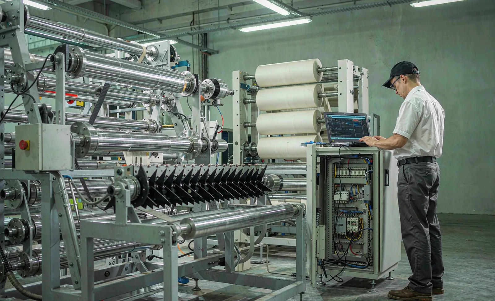
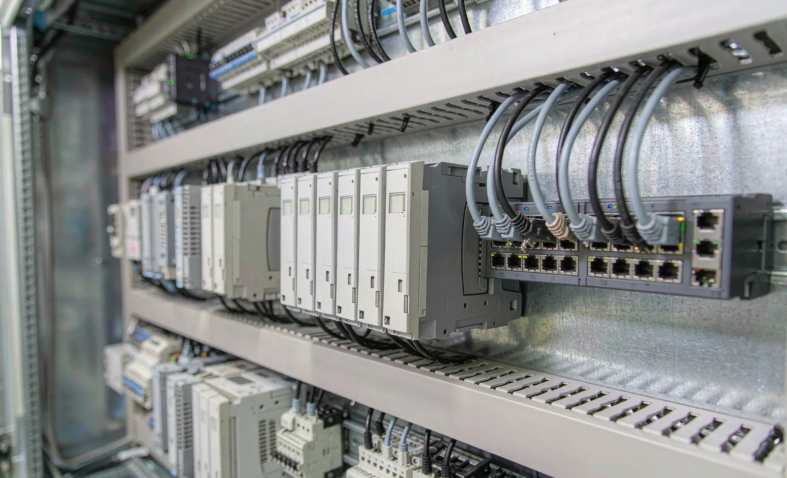

Published September 15, 2026 | By HDPTH Technical Editorial Team

When a slitter rewinder stops in a plant that runs three shifts, the clock is the expensive part: the fault may take ten minutes to fix and ten hours to diagnose. Remote diagnostics attacks the diagnosis time. Instead of flying a service engineer in to read a log, the supplier connects, sees the alarm history and drive data, and often resolves the issue in the first session. IoT connectivity extends this from troubleshooting to prevention — continuous condition data on bearings, drives and tension systems feeding predictive maintenance. But connectivity is also a new surface: a door into your plant network, a stream of your process data, and a dependency you did not have before. Buyers who specify it well get the benefits and keep the control; buyers who accept the default get whatever the vendor’s IT department chose.
What remote diagnostics should actually cover
“Remote diagnostics” should not be a vague promise. Require these concrete capabilities:
- Full alarm and event history readable remotely — not just a status page, but the same alarm text, timestamps and context available at the HMI.
- Drive and control status: inverter fault codes, tension loop status, axis diagnostics — the data service engineers actually need first.
- Diagnostic log export: the ability to pull logs without a site visit, and to send updated parameters after a change is agreed.
- Session control on your side: you approve each session, see who is connected, and can cut the connection at any time.
- Optional remote HMI view: read-only observation of the machine interface for guided troubleshooting with your operators.
This pairs naturally with the data capabilities described in our OEE and downtime data buyer guide: the same structured data that feeds your MES also feeds remote service.
IoT connectivity and predictive maintenance worth specifying
Predictive maintenance is credible when it is specific. Rather than asking whether a machine “has AI”, ask which failure modes are monitored and what signal carries the warning:
| Failure mode | Signal monitored | What good looks like |
|---|---|---|
| Roller/chuck bearing wear | Vibration signature, temperature | Trend reported with warning horizon; alarm thresholds documented |
| Drive overload / mechanical drag | Motor torque and current trends | Drift against baseline flagged before the fault trips |
| Tension-control degradation | Tension deviation and control activity | Rising correction effort highlighted as a maintenance cue |
| Pneumatic and vacuum systems | Pressure trends vs. consumption | Leak or filter clogging suspected from trend, not failure |
Require that condition data is exportable in open formats (OPC UA, MQTT or CSV) so your own maintenance system can consume it — avoiding lock-in to one vendor’s portal. Ask for evidence: which signals, what warning horizon, and results from comparable installations. And read our vibration and noise acceptance guide for the acceptance-test side of mechanical condition.

Data ownership: settle it in the contract
If the machine streams data to a supplier cloud, three questions decide whether that arrangement is acceptable:
- Who owns it? Data generated on your line — production, process, diagnostics — should be contractually yours, with the supplier allowed aggregated, anonymized use for product improvement.
- Where does it live, and who can see it? Data location, access rights within the supplier organization, and compliance with your region’s data-protection requirements.
- What happens at the end? Full export in open formats, confirmed deletion from supplier systems on request, and no hostage situations: local machine functions must never depend on an active subscription.
Security questions for every vendor
Connected machinery touches your production network, so the machine must arrive with security engineering, not an afterthought. Put these questions in the RFQ:
- Is remote access via a gateway the plant administers, with per-user accounts, encrypted sessions and full session logging?
- Can all remote access be disabled by us at any time, without losing local functionality?
- How is the machine network segmented — is the control network separated from office IT, and are switches and firewalls part of the delivery?
- What is the software-update policy, including security patches for PLC, HMI and gateway components, and who applies them?
- Which standards does the security design follow — e.g. IEC 62443 practices — and is hardening documentation delivered?
- What happens if a vulnerability is found after delivery — notification process and patch timeline?
Connected, but on your terms
Send your connectivity, data-ownership and security requirements with your machine inquiry. HDPTH will specify the remote-diagnostics architecture in writing — gateway, data flows, contracts — and demonstrate every remote function before delivery.
Submit Your Project InquiryService contract implications
Remote capability changes the service economics in both directions — response times can drop dramatically, but new recurring charges and dependencies appear. A good contract states:
- Response commitments: how quickly remote diagnosis starts after a request, and in which time zone the support team operates.
- Included versus billed: which remote sessions, updates and portal functions are covered, and the rate for the rest.
- Session rules: your approval before each connection, session logging you can review, immediate revocation rights.
- Offline guarantee: the machine runs, logs and completes maintenance functions with no internet connection and no subscription.
- Exit terms: data export and deletion, and the cost of re-enabling connectivity later if you switch it off.
These terms belong next to the mechanical and FAT terms in the purchase agreement — see our FAT checklist for the verification framework that should also cover remote functions live, including a full remote session from a test network.
Frequently asked questions
Is remote access to a slitter rewinder safe?
It can be, if it is engineered rather than improvised. The safe pattern is a site-controlled remote-access gateway with per-session, per-user authentication, encrypted tunnels, logged sessions and access that you can revoke. What should be refused is a permanent, unlogged connection or a consumer-grade remote-desktop tool sharing one password across the supplier’s service team.
Who owns the machine data collected by the OEM?
That is a contract question, so settle it in the purchase agreement: data generated on your line should belong to you, be exportable in open formats without licence fees, and be retrievable and deletable from any supplier cloud service on request. The supplier may use aggregated, anonymized data for product improvement, but raw production and process data from your plant is yours.
Can predictive maintenance really prevent unplanned downtime on a slitter?
For the failure modes that announce themselves — bearing wear, vibration growth, temperature drift, increasing drive torque — continuous monitoring gives days or weeks of warning and converts failures into planned work. Random failures such as a broken web or a dropped object are not predictable. Ask suppliers which signals each prediction is based on, the warning horizon, and the evidence from comparable installations.
Do I need a permanent internet connection on the machine?
No. Full remote functionality depends on connectivity, but the machine must run and log locally without it. Specify an on-demand connection model — a session opened when service or data sync is needed — and require that buffering keeps diagnostic data during offline periods so nothing is lost between connections.
What should a remote-support service contract include?
At minimum: response times for remote diagnosis, what is included versus billed per case, the security requirements for remote sessions (approval, logging, revocation), data ownership and deletion terms, software-update policy including security patches, and the guarantee that local machine functions never depend on keeping a subscription active.